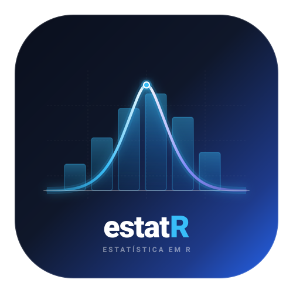

Classificação com Aprendizado de Máquina
classificacao_aprend_maq.RdAjusta modelos de Aprendizado de Máquina para classificação (variável resposta categórica ou binária). Suporta algoritmos consolidados com otimização de hiperparâmetros ou ajuste manual em português.
Usage
classificacao_aprend_maq(
formula,
dados,
algoritmo = c("rf", "xgboost", "svm", "knn", "arvore"),
proporcao_treino = 0.75,
semente = 42,
n_arvores = NULL,
vars_por_no = NULL,
k = NULL,
n_rounds = NULL,
profundidade = NULL,
taxa_aprendizado = 0.1,
custo = 1,
grafico = TRUE
)Arguments
- formula
Fórmula no formato
y ~ x1 + x2ouy ~ ..- dados
Data frame contendo as variáveis do modelo.
- algoritmo
Algoritmo a utilizar:
"rf"(Random Forest / Floresta Aleatória, padrão),"xgboost"(Extreme Gradient Boosting),"svm"(Máquina de Vetores de Suporte),"knn"(K-Vizinhos Mais Próximos) ou"arvore"(CART).- proporcao_treino
Proporção da amostra destinada ao treino (padrão
0.75).- semente
Valor inteiro para reprodutibilidade (padrão
42).- n_arvores
Número de árvores (para
"rf"). SeNULL(padrão), aplica busca automática por estabilização do erro OOB.- vars_por_no
Número de variáveis por divisão em cada nó (
mtry). SeNULL(padrão), utilizamax(1, floor(sqrt(p))).- k
Número de vizinhos mais próximos (para
"knn"). SeNULL, utilizafloor(sqrt(n_treino)).- n_rounds
Número de rodadas de boosting (para
"xgboost").- profundidade
Profundidade máxima das árvores.
- taxa_aprendizado
Taxa de aprendizado (
eta) para"xgboost".- custo
Parâmetro C para
"svm".- grafico
Lógico. Se TRUE (padrão), exibe gráfico com grade dupla.